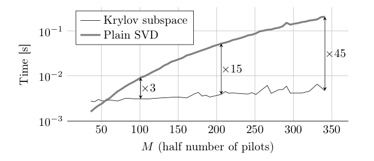

Preamble
Abstract --- We present proof of concept code -- MATLAB and Python -- for identification of the union of subspaces in FRI estimation problems when the number of measurements greatly exceeds the dimension of the model. This scenario happens frequently in wireless communications, *eg. OFDM channels estimation from pilots. The key properties are a superlinear running-time and a linear memory consumption in term of the input size.*
Formulation of the problem
We consider a set of $P$ sequences of measurements
\[Y_p[m] = \sum_{k=1}^K c_{k,p}e^{-jD\omega_k m}+E[m]\ ,\quad\ |m|\leq M, \quad p=1,\ \dots, \ P,\]
where
- $K$ is the number of subspaces in the union of subspaces,
- $D$ is an integer decimation factor ($D= 1,\ 2,\ 3,\ \dots$),
- $\omega_k$ are unknown phases within $[-\pi/D ,\ \pi/D[$,
- $c_{k,p}$ are unknown complex-valued scalars,
- $E$ is a sequence of white gaussian noise.
Therefore, the input is of size $P(2M+1)$. The problem we consider is the fast and accurate estimation of the unknown phases $\omega_k$ from the measurements.
Theoretical guarantees of the proposed solution
The properties of our solution can be summarized and compared with other methods as :
| Algorithm | Main computation | Storage | Latency | Processing units (pu.) |
|---|---|---|---|---|
| Krylov | $KPM\log M$ | $KM$ | $KM$ | $P:\times$ FFT engines ($2(M+1)$ points FFT) |
| Full SVD (serial) | $PM^{3}$ | $PM^{2}$ | $PM^{3}$ | 1 SVD multipurpose processor |
| Full SVD (systolic array) | $PM^{3}$ | $PM^{2}$ | $M(\log M +P)$ | $M^{2}\times:$ 2-by-2 SVD pu. |
: The full SVD is done with Jacobi rotations and can be massively parallelized using the systolic array method [@Brent1985]. Parallelism greatly reduces the latency of the system, but since it does not reduce the number of computations it comes at the cost of using multiple processing units. The numbers are to be understood in "$\mathcal{O}$" notation.
The storage improvement comes from the fact that the data matrix used within the ESPRIT algorithm is never explicitely built. The computational improvement is guaranteed by [@Barbotin2013, Theorem 2.3], where it is proven that the sine squared of the principal angle between the signal space -- The signal space is the union of subspaces referred above -- of dimension $K$ and its approximation found in a Krylov subspace of dimension $L>K$ evolves as
$$\mathcal O\left(\left(\frac{\log M}{\sqrt{M}}\right)^{2(L-K)}\right).$$
(For a small angle, the first order Taylor approximation of the sine function indicates that the principal angle is of magnitude $\mathcal O\left(\left(\frac{\log M}{\sqrt{M}}\right)^{(L-K)}\right).$)
It indicates that the approximation error decays as a power degree corresponding to the number of additional dimensions compared to the signal subspace, so that a low enough numerical error is met for $L\sim\mathcal O(K)$ and $M$ large enough.
Code snippets
Foreword
Keep in mind that:
- We provide a MATLAB and a Python code The Python code implements only the single input case, ie. $P=1$.
- Since the measurements are indexed by $|m|\leq M$ it assumes that they are in an odd number. This is not a requirement per se, and the code can easily be tweaked to deal with it.
- Both codes output the phasor $z_k=e^{jD\omega_k}$. The original phase is retrieved without ambiguity by a simple division of the phase by $D$ assuming it belongs to $[-\pi/D ,\ \pi/D[$.
- This is a basic code, it does not include the estimation of the signal space dimension nor the estimation of the coefficients $c_{k,p}$ -- the later is quite straightforward and can be done efficiently using rational interpolation [@Pan2001].
MATLAB code
First, we provide a simple implementation of the ESPRIT algorithm using a least-squares (LS) or total least-squares (TLS) error metric and using either (see the Table above) :
- The "Full SVD (serial)" method.
- The "Krylov" method.
See [@Roy1989] for the original ESPRIT algorithm, and [@Barbotin2013, Chapter 2] for more details on this particular usage.
function z=ESPRIT(Y,K,krylov,TLS)
% INPUT
% Y : A Px(2*M+1) array of measurements (see measurement model above)
% K : The dimension of the signal space
% krylov, TLS : Boolean flags enabling/disabling the use of the Krylov method and TLS
%
% OUTPUT
% z : A vector containing the phasors exp(D*omega)
if krylov
[V D]=sigspace_toeplitz_Krylov(Y,K);
else
[V D]=sigspace_toeplitz(Y,K);
end
if TLS
%ESPRIT-TLS
[~,~,C]=svd([V(1:(end-1),1:K) V(2:end,1:K)],0);
Phi=eig(-C(1:K,(K+1):(2*K))/C((K+1):(2*K),(K+1):(2*K)));%literally: eig(Psi)
else
%ESPRIT-LS
Phi=eig(V(1:(end-1),1:K)\V(2:end,1:K));
end
z=Phi(:);
end
The two functions sigspace_toeplitz_Krylov and sigspace_toeplitz are yet to be defined.
First the Krylov based method. Some parameters like the tolerance, the number
of lanczos vectors, ... are usually fixed and therefore hard-coded -- see the
structure opts. Change them to suit your needs.
function [V D termsig]=sigspace_toeplitz_Krylov(Y,K,v0)
% INPUT
% Y : A Px(2*M+1) array of measurements (see measurement model above)
% K : The dimension of the signal space
% v0 : (optional) The initial vector for Lanczos algorithm
%
% OUTPUT
% V : An orthonormal basis of the signal space
% D : The modulus of the associated singular values
% termsig : The termination signal of the Krylov decomposition (see the MATLAB documentation of EIGS)
[P N]=size(Y);
M=floor(N/2);
tc=Y(:,(N-M):end).'; %dim = MxP
tl=Y(:,(N-M):-1:1).'; %dim = MxP
sn=mod(N,2);
%% FFT implementation of T'*T*f (T is stack-toeplitz)
%tc contains the leading column of each toeplitz block (P columns)
%tr contains the leading row of each toeplitz block (P rows)
fc=fft([tc;zeros(1,P);tl(end:-1:2,:)]);
fcconj=fft([conj(tl);zeros(1,P);conj(tc(end:-1:2,:))]);
function g=mmult(f)
g=[f; zeros(M+sn,1)];
g=ifft(bsxfun(@times,fc,fft(g)));
g((M+2):end,:,:)=0;
g=ifft(bsxfun(@times,fcconj,fft(g)));
g=sum(g(1:(M+1),:),2);
end
%% Arguments for eigs()
A=@(f)mmult(f); %pointer to the mat-vec multiply
if nargin>2
opts.v0=v0; %initial vector of lanczos, set for tracking
end
opts.tol=1e-6; %play with it
opts.issym=1; %We have an hermitian square matrix
opts.isreal=0; %may apply if Y is real
opts.p=max(2*K+1,5); %# of lanczos vectors
[V D termsig]=eigs(A,M+1,K,'lm',opts);
D=sqrt(diag(D));
end
During the Krylov subspace projection the block-Toeplitz data matrix $\mathbf
T$ is only accessed through matrix vector multiplications, therefore it does
not have to be built explicitely, rather we coded the function mmult which
uses the FFT to perform the matrix-vector multiplication.
As a comparison, the direct implementation sigspace_toeplitz would be:
function [V D]=sigspace_toeplitz(Y,K)
% INPUT
% Y : A Px(2*M+1) array of measurements (see measurement model above)
% K : The dimension of the signal space
%
% OUTPUT
% V : An orthonormal basis of the signal space
% D : The modulus of the associated singular values
N=size(Y,2);
L=floor(N/2);
T=blockToeplitz(Y,L);
[~,D,V]=svd(T,0);
D=diag(D);
V=V(:,1:K);
D=D(1:K);
end
function T=blockToeplitz(Y,L)
[P N]=size(Y);
M=N-L+1;
T=zeros(P*M,L);
for b=1:P
T(M*(b-1)+(1:M),:)=toeplitz(Y(b,L:end),Y(b,L:-1:1));
end
end
Python code
Below is a simple Python class for a single input ($P=1$). Extension to multiple inputs is relatively easy, follow the MATLAB code.
# This class stores a Toeplitz matrix implicitly (generator) and provide fast methods to evaluate its column-space
# and the roots of its generator
import numpy as np
from scipy.sparse.linalg import LinearOperator, eigs
import scipy.fftpack as fftp
from scipy.linalg import svd, eig, lstsq
class toeplitzgen:
def __init__(self, col,row):
self.col=np.asarray(col).reshape((-1))
self.row=np.asarray(row).reshape((-1))
self.M=self.row.size
assert self.M==self.col.size
assert self.row[0]==self.col[0]
self.fc=fftp.fft(np.concatenate((self.col,np.zeros(1),self.row[-1:0:-1])))
self.fcconj=fftp.fft(np.concatenate((np.conj(self.row),np.zeros(1),np.conj(self.col[-1:0:-1]))))
self.linop=LinearOperator((self.M,self.M),matvec=self.vmult,rmatvec=self.vmult,matmat=self.mmult)
self.TOL=1e-10
def vmult(self,x):
g=fftp.ifft(self.fc*fftp.fft(np.concatenate((x.reshape((-1)),np.zeros((self.M))))))
g[self.M:]=0;
return fftp.ifft(self.fcconj*fftp.fft(g))[0:self.M]
def mmult(self,A):
P=A.shape[1]
G=fftp.ifft(self.fc.reshape((-1,1))*fftp.fft(np.concatenate((A,np.zeros((self.M,P)))),None,0),None,0)
G[self.M:][:]=0;
return fftp.ifft(self.fcconj.reshape((-1,1))*fftp.fft(G,None,0),None,0)[0:self.M,:]
def colSpace(self,K):
evl, evct = eigs(self.linop,K,tol=self.TOL)
return evct
def ESPRIT_TLS(self,K):
V0=eigs(self.linop,K,tol=self.TOL)[1]
C=svd(np.concatenate((V0[0:-1,:],V0[1:,:]),1),False)[2].T
return -
For more details, see the documentation on the LinearOperator object.
As a quick check, the fast implementation quickly outperforms the direct implementation as $M$ grows :

Bibliography
Barbotin, Yann. 2013. “Parametric Estimation of Sparse Channels: Theory and Applications.” PhD thesis, EPFL – School of Information; Communications.
Brent, RP, FT Luk, and C. Van Loan. 1985. “Computation of the Singular Value Decomposition Using Mesh-connected Processors.” Journal of VLSI and Computer Systems 1 (3): 242–270.
Pan, Victor. 2001. Structured Matrices and Polynomials: Unified Superfast Algorithms. Springer Verlag.
Roy, R., and T. Kailath. 1989. “ESPRIT-Estimation of Signal Parameters Via Rotational Invariance Techniques.” IEEE Trans. Acoust., Speech, Signal Process. 37: 984–995.